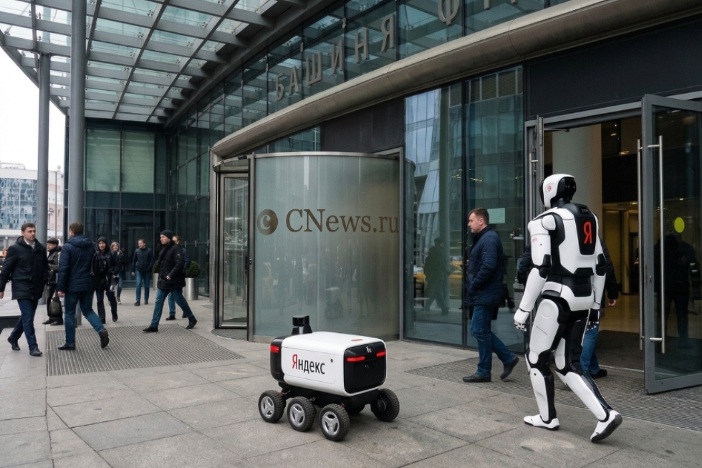

«Яндекс» до конца 2026 года запустит пилотный проект по доставке заказов человекоподобными роботами, сообщает «Коммерсантъ» со ссылкой на два источника на ИТ-рынке. На первом этапе проект охватит четыре локации. Схема работает как эстафета: привычный ровер «Яндекса» довозит товары до входа в здание, а робот-гуманоид передаёт их внутри здания — уже в руки клиенту.
Аппаратной основой гуманоида служит китайская модель Unitree G1 массой около 35 килограммов, а за управление отвечает разработанная «Яндексом» программная платформа Leshy OS. Связка не с нуля: осенью 2025 года компания уже представляла человекоподобного робота на этой же аппаратной базе, так что пилот — продолжение линии, а не эксперимент с чистого листа.
По данным «Коммерсанкта», роверы «Яндекса» уже обходятся дешевле живого курьера, а вот гуманоиды пока дорогие. Источник издания на ИТ-рынке отмечает: основная часть проекта сосредоточена на препятствиях, которые существенны именно для роверов, — то есть на «последних метрах» маршрута, где колёсный робот бессилен, а двухногий справится. Пилот позволит заранее накопить данные и компетенции, пока технология не стала массовой.
Отдельного официального анонса «Яндекс» не публиковал: все детали в прессе восходят к анонимным источникам «Коммерсанкта» на ИТ-рынке. Так что это пока утечка о планах, а не подтверждённый запуск, — цифры и сроки могут измениться.